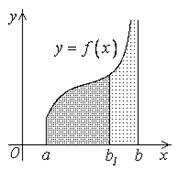
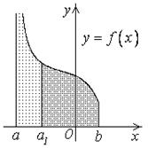
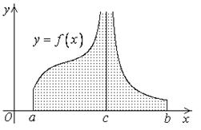

25.2. Несобственные интегралы второго рода (от неограниченных функций)
Пусть функция  непрерывна на
интервале и неограниченна вблизи
непрерывна на
интервале и неограниченна вблизи  . Тогда функция непрерывна на любом
отрезке , где и,
следовательно, существует интеграл .
. Тогда функция непрерывна на любом
отрезке , где и,
следовательно, существует интеграл .
непрерывна на
интервале и неограниченна вблизи . Тогда функция непрерывна на любом
отрезке , где и,
следовательно, существует интеграл .
Рассмотрим . Этот предел
называется несобственным интегралом второго рода и обозначается .
Таким образом,
Несобственный
интеграл второго рода
.

Если этот предел существует и конечен, то несобственный
интеграл называется сходящимся, в противном случае несобственный
интеграл называется расходящимся.
Аналогично для функции , непрерывной
на промежутке и неограниченной вблизи  , несобственный интеграл определяется следующим образом:
, несобственный интеграл определяется следующим образом:
, непрерывной
на промежутке и неограниченной вблизи , несобственный интеграл определяется следующим образом:.
Если этот правосторонний предел существует и конечен, то
несобственный интеграл называется сходящимся, в противном случае – расходящимся.
Пусть теперь функция непрерывна
на отрезке  всюду, кроме некоторой точки
всюду, кроме некоторой точки  (),
и неограниченна вблизи .
(),
и неограниченна вблизи .
непрерывна
на отрезке всюду, кроме некоторой точки (),
и неограниченна вблизи .
Несобственный интеграл определяется
равенством:
.
Если каждый из интегралов в правой части равенства
сходится, то несобственный интеграл называется сходящимся,
в противном случае – расходящимся.
Пусть  – первообразная
для функции на промежутке и не
ограничена вблизи b.
– первообразная
для функции на промежутке и не
ограничена вблизи b.
– первообразная
для функции на промежутке и не
ограничена вблизи b. Тогда
.
Если обозначить через , то получим следующий аналог формулы
Ньютона-Лейбница для несобственного интеграла второго рода:
,
где .
Аналогично для функции ,
не ограниченной вблизи , ,
где .
,
не ограниченной вблизи , ,
где .Вычислить несобственные интегралы или доказать, что они
расходятся:
1˚. ;
2˚. .
Решение:
В первом интеграле подынтегральная функция не ограничена при  , поэтому интеграл является несобственным. Применим
обобщенную формулу Ньютона-Лейбница:
, поэтому интеграл является несобственным. Применим
обобщенную формулу Ньютона-Лейбница:
, поэтому интеграл является несобственным. Применим
обобщенную формулу Ньютона-Лейбница:.
Во втором интеграле подынтегральная функция не ограничена вблизи  . Поэтому, по определению,
. Поэтому, по определению,
. Поэтому, по определению,.
Рассмотрим интеграл . Этот интеграл
расходится, поэтому и интеграл – расходится.
Отметим, что если бы мы стали вычислять данный интеграл, не обращая внимания на
разрыв подынтегральной функции в точке ,
то получили бы неверный результат.
,
то получили бы неверный результат.Рассмотрим геометрический смысл несобственного
интеграла 2-го рода.
Пусть и – непрерывна на и не ограничена вблизи . Тогда () равен площади фигуры, ограниченной
снизу отрезком оси  , сверху – линией
, сверху – линией  , слева и справа – прямыми
, слева и справа – прямыми  ,.
При стремлении к ,
прямая стремится к прямой
,.
При стремлении к ,
прямая стремится к прямой  . Поэтому естественно
принять за площадь бесконечной фигуры, ограниченной снизу отрезком оси ,
сверху линией , слева и справа – прямыми и .
. Поэтому естественно
принять за площадь бесконечной фигуры, ограниченной снизу отрезком оси ,
сверху линией , слева и справа – прямыми и .
– непрерывна на и не ограничена вблизи . Тогда () равен площади фигуры, ограниченной
снизу отрезком оси , сверху – линией , слева и справа – прямыми ,.
При стремлении к ,
прямая стремится к прямой . Поэтому естественно
принять за площадь бесконечной фигуры, ограниченной снизу отрезком оси ,
сверху линией , слева и справа – прямыми и .